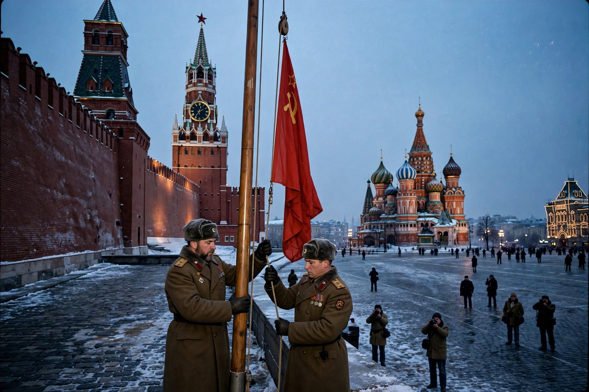

The dissolution of the Soviet Union (1988–1991) was the process by which the Union of Soviet Socialist Republics disintegrated into 15 independent states. It formally ended on 26 December 1991, when the Soviet of Republics declared the USSR dissolved, following the Belovezha Accords and the Alma-Ata Protocols, and Mikhail Gorbachev's resignation on 25 December.

| Dissolution of the Soviet Union | |
|---|---|
| Date | 1988 – 26 December 1991 |
| Key figures | Gorbachev, Yeltsin |
| Outcome | 15 independent republics; end of Cold War |
Economic stagnation, the costs of the arms race and Afghanistan war, falling oil prices, and nationalist grievances strained the union. Gorbachev's reforms — glasnost (openness) and perestroika (restructuring) from 1985 — loosened controls without stabilising the system, while the 1989 revolutions ended communist rule in Eastern Europe.
The Baltic states led secession movements; Lithuania declared independence in March 1990. Boris Yeltsin's election as Russian president rivalled Gorbachev's authority. The failed August 1991 coup by hardliners fatally weakened the centre. On 8 December 1991 the leaders of Russia, Ukraine and Belarus signed the Belovezha Accords creating the Commonwealth of Independent States; other republics joined at Alma-Ata on 21 December.
Russia inherited the USSR's UN Security Council seat, embassies and nuclear arsenal arrangements. The successor states faced economic shock therapy, border disputes and conflicts including in Transnistria, Nagorno-Karabakh, Tajikistan and Chechnya. The dissolution marked the end of the Cold War and a unipolar moment for the United States.